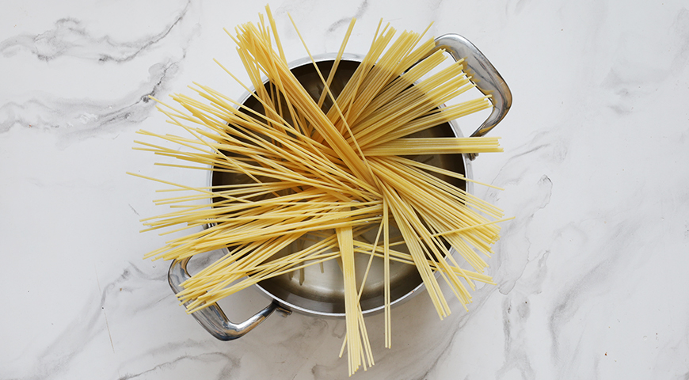
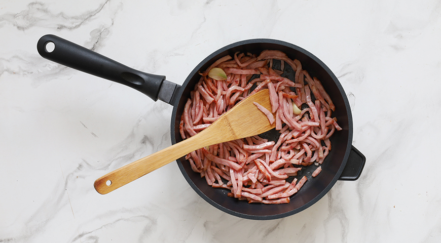
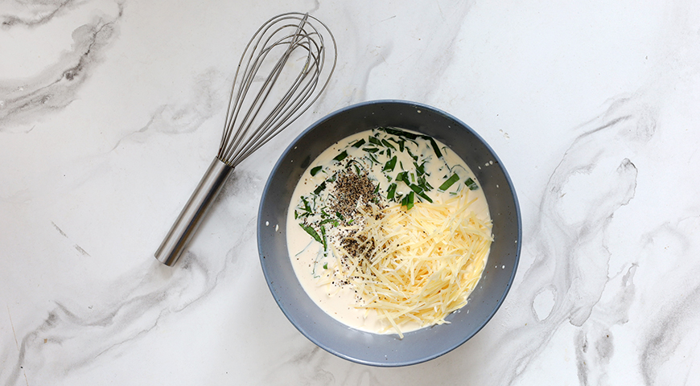
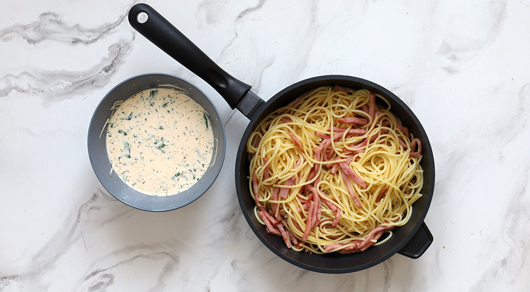

Вскипятите 2,5 л воды, посолите и опустите спагетти. Варите пасту до упругости согласно инструкции на упаковке, примерно 6-7 мин. Откиньте на дуршлаг, дайте стечь воде.
В глубокой сковородке разогрейте оливковое масло и обжарьте нарезанный ломтиками чеснок, 30 сек. Добавьте нарезанную соломкой ветчину и готовьте 3 мин.
Соедините желтки со сливками и взбейте венчиком. Добавьте соль, свежемолотый черный перец, тертый пармезан и мелко нарезанный базилик, тщательно перемешайте.
Переложите спагетти в сковородку с ветчиной, перемешайте и прогрейте, 1 мин. Разложите пасту карбонара с ветчиной и сливками в подогретые тарелки и полейте сливочным соусом.
Перед подачей на стол пасту карбонара с ветчиной и сливками можно дополнительно посыпать тертым твердым сыром, свежемолотым черным перцем и украсить листочками базилика.
Итальянцы говорят, что паста любит воду, поэтому варят ее в огромных кастрюлях. Вы можете последовать совету профессионалов! Выбирая кастрюлю, помните, что на 100 г сухой пасты «по классике» необходимо не менее 800 мл воды.